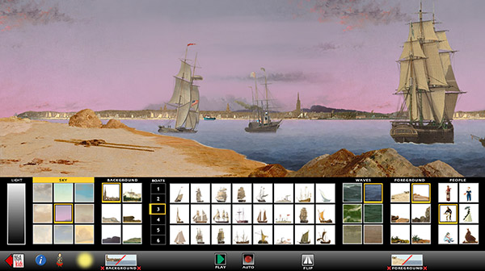
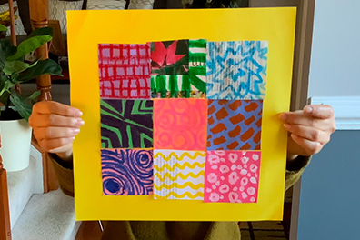
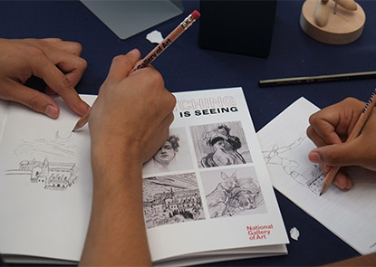

NGAkids Art Zone App for iPad
Visit a virtual art museum where you can explore art-making tools and interactives inspired by works in the Gallery's collection.

Art Tales
Explore artworks with your children, read books with related themes, and try your hand at making some art of your own. Available in English and Español.

Ten Digital Education Resources from the National Gallery of Art
To support parents and their children, teachers, students, and caregivers alike, our educators created this selection of activities, lesson plans, films, and other materials for learning at home.